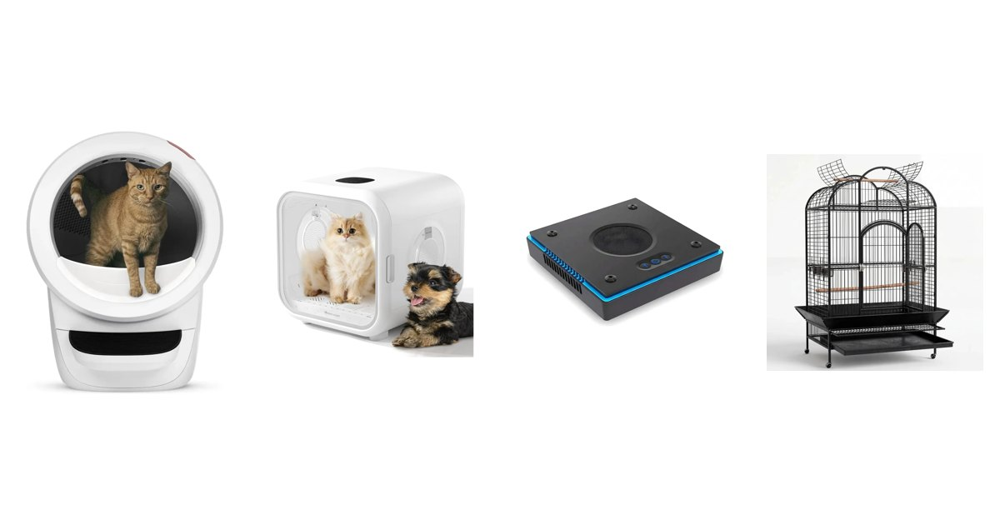

Produtos Pet Premium que Valem o Investimento em 2026

Este post contém links de afiliado. Podemos receber uma comissão em compras feitas através deles, sem custo adicional para você.
Um produto pet de R$ 4 mil a R$ 6 mil só vale o preço quando resolve um problema que se repete todo dia: a caixa de areia de três gatos, a fila de secagem no pet shop, o calor do aquário de recife no verão, o cão que some no mato. Este guia reúne os produtos pet premium que analisamos em quatro categorias, com preços do Mercado Livre em 27/11/2026 (semana de Black Friday), e indica para quem cada um compensa. Cada categoria tem um comparativo completo, com ficha técnica, prós e contras.
Como Saber se um Produto Pet Premium Vale a Pena
Antes de olhar marcas, faça três perguntas:
- Ele economiza tempo ou trabalho todo dia? Caixa de areia automática e máquina de secar se pagam em horas poupadas. Um acessório de uso esporádico raramente compensa o preço premium.
- Ele resolve um risco real? Chiller num aquário de recife ou coleira com rádio para cão que anda em área sem sinal evitam perdas difíceis de reverter.
- Tem assistência no Brasil? Vários produtos premium são importados, com garantia dada lá fora. Nesta seleção, todas as caixas de areia automáticas vêm dos EUA; os equipamentos de pet shop, aquário e criação têm envio nacional.
Em todos os comparativos, analisamos especificações, manuais e avaliações de compradores. Não testamos os produtos, e o que o fabricante não informa aparece como "não informado".
Resumo: o Melhor de Cada Categoria
Preços sujeitos a alteração — confira o valor atual no botão.
| Categoria | Nossa escolha | Por quê | Preço | |
|---|---|---|---|---|
| Caixa de areia automática | Litter-Robot 4 | Até 4 gatos, 14 mil avaliações no fabricante | R$ 6.340 | Ver preço |
| Secador para pet shop | Kit Kyklon Maestro + Revolution | Secador 2.400 W + soprador de 2 motores, marca nacional | R$ 4.030 | Ver preço |
| Aquário | Chiller Gelaqua 1/3 HP | Até 750 L, serpentina de titânio, nota 4,9 | R$ 5.599 | Ver preço |
| Criação e alto padrão | Chocadeira Hobby 130 | Viragem automática, nota 4,9 | R$ 3.990 | Ver preço |
Caixa de Areia Automática: o Premium Mais Útil para Quem Tem Gato
É o produto premium que mais muda a rotina de quem tem gato. A caixa peneira a areia sozinha depois de cada visita e guarda os torrões numa gaveta fechada, que você esvazia a cada uma ou duas semanas. Os apps ainda registram as visitas, um dado útil para perceber mudanças de saúde cedo.
Comparamos cinco modelos, de R$ 3.889 a R$ 6.340. O Litter-Robot 4 é a melhor escolha para a maioria, por aceitar até 4 gatos de até 11,3 kg. A Neakasa M1 Plus é a mais barata e, por ser aberta, a mais fácil para gato desconfiado ou grande. A Petlibro Luma tem câmera que identifica cada gato. Todas são importadas dos EUA, com prazo maior e possível imposto no checkout.
Também funciona como um dos presentes para quem tem gato mais apreciados, desde que você saiba quantos gatos a pessoa tem e se a casa tem Wi-Fi.
👉 Veja o comparativo completo: melhor caixa de areia automática para gatos em 2026.
🐱 Litter-Robot 4: veja o preço atual no Mercado Livre.
Ver preço atual no Mercado LivreSecador e Soprador para Pet Shop: Onde o Tempo Vira Dinheiro
No banho e tosa, a secagem define quantos animais você atende por dia. O soprador tira o excesso de água, o secador de pedestal finaliza o pelo, e a máquina de secar trabalha sozinha enquanto o profissional cuida de outro cliente.
Para pet shop em funcionamento, o kit Kyklon Maestro + Revolution (R$ 4.030) junta secador de 2.400 W com quatro temperaturas e soprador de dois motores. Para montar a estrutura do zero, um kit com secador, soprador, mesa e banheira sai por R$ 3.499, com nota 4,7. Quando a secagem vira gargalo, a máquina de secar Minag Compacta (R$ 5.539) libera o tosador. Atenção à voltagem: os equipamentos profissionais não são bivolt.
👉 Veja o comparativo completo: melhor secador para pet shop em 2026.
🌀 Kit Kyklon Maestro + Revolution: veja o preço atual no Mercado Livre.
Ver preço atual no Mercado LivreEquipamentos Premium para Aquário: Chiller, Canister e Luminária
Em aquário grande ou de recife, três equipamentos concentram o investimento. O chiller segura a temperatura no verão, quando a ventoinha não basta. O filtro canister dá conta da sujeira de aquários grandes e povoados. E a luminária define o crescimento dos corais.
O chiller Gelaqua 1/3 HP (R$ 5.599) é nossa escolha: atende até 750 litros, tem serpentina de titânio para água salgada e nota 4,9. O Boyu LS5 serve aquários de até 250 litros. O Fluval FX6 (R$ 4.659) filtra até 1.500 litros, e a EcoTech Radion XR15 G6 Blue (R$ 3.999) estava com 29% de desconto.
👉 Veja o comparativo completo: melhor chiller para aquário e equipamentos premium.
❄️ Chiller Gelaqua 1/3 HP: veja o preço atual no Mercado Livre.
Ver preço atual no Mercado LivreColeira GPS de Longo Alcance, Viveiro e Chocadeira
Fora do universo cão e gato de apartamento, há equipamentos premium para quem tem cães de trabalho no campo, aves de grande porte ou cria aves.
- Coleira GPS Eseek (R$ 5.650): rádio VHF de cerca de 15 km mais 4G, com aparelho de mão próprio. Para cães em fazendas e trilhas sem sinal de celular; confirme a homologação na Anatel.
- Viveiro Veneza American Pets (R$ 4.749): 185 x 131 x 102 cm para papagaio e aves grandes, mais de 100 vendidos.
- Chocadeira Premium Ecológica Hobby 130 (R$ 3.990): 130 ovos de galinha, viragem automática e temperatura digital, nota 4,9.
👉 Veja a análise completa: produtos pet de alto padrão: coleira GPS, viveiro e chocadeira.
🐣 Chocadeira Hobby 130: veja o preço atual no Mercado Livre.
Ver preço atual no Mercado LivreTecnologia para Pets: o que Comprar Antes do Premium
Se o orçamento ainda não chega aos produtos acima, a tecnologia para pets de entrada já automatiza boa parte da rotina por bem menos: um comedouro automático para gatos, um bebedouro automático, uma câmera para monitorar o pet ou uma coleira GPS para cachorro de uso urbano.
Perguntas Frequentes
Quais produtos pet de luxo realmente valem a pena?
Os que resolvem um problema diário ou um risco real. Na nossa análise, caixa de areia automática para casas com vários gatos, secador profissional para pet shop, chiller para aquário de recife e coleira GPS com rádio para cães em área rural são os que mais compensam. Produtos de uso esporádico raramente justificam o preço premium.
Qual o melhor presente para quem tem gato?
Para um presente premium, a caixa de areia automática é das mais úteis, porque elimina a limpeza diária. Antes de comprar, descubra quantos gatos a pessoa tem, o peso deles e se a casa tem Wi-Fi de 2,4 GHz. Para presentes menores, comedouro e bebedouro automáticos também automatizam a rotina.
Produtos pet importados têm garantia no Brasil?
Geralmente a garantia é a do fabricante no exterior, sem assistência técnica oficial no Brasil. Nesta seleção, as cinco caixas de areia automáticas são importadas dos EUA. Antes de comprar, confira prazo de entrega, tributos no checkout, voltagem da fonte e tipo de tomada.
Vale a pena comprar produto pet premium na Black Friday?
Vale quando o desconto é real e o produto já estava nos seus planos. Em 27/11/2026, encontramos descontos sobre o preço anterior do anúncio de 29% na luminária Radion XR15, 21% no Litter-Robot Evo e 16% no filtro Fluval FX6. Compare com o preço de semanas anteriores antes de decidir.
Conclusão
Produto pet premium vale o investimento quando entra na rotina todo dia. Para quem tem vários gatos, comece pela caixa de areia automática. Para pet shop, pelo secador e soprador profissionais. Para aquário de recife, pelo chiller. E para cães no campo, aves grandes ou criação, pelos produtos de alto padrão.
Veja nossa política editorial e como verificamos as fontes citadas neste artigo. Fontes de cada produto nos comparativos de cada categoria.
🐾 Litter-Robot 4: o produto premium que mais muda a rotina de quem tem gato.
Ver preço atual no Mercado LivreLink de afiliado: podemos receber uma comissão por compras feitas através deste link, sem custo adicional para você. Preços sujeitos a alteração — confira o valor atual no botão.